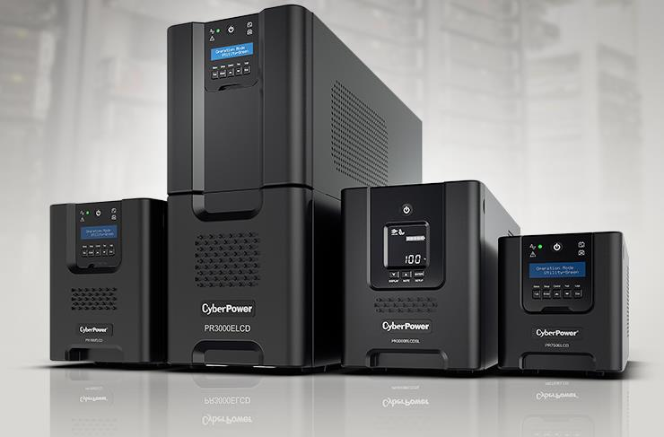

Hola, me llamo Sergi y soy estudiante de 1º de ASIX en San José Obrero y estos son algunos de mis proyectos que he hecho en Hardware

Hola, me llamo Sergi y soy estudiante de 1º de ASIX en San José Obrero y estos son algunos de mis proyectos que he hecho en Hardware
Unidades de medidas
HTTP
CPU
Memorias
Targeta Gráficas
Virtualización
Reparación de equipos
Desarrollo colaborativo
SAIS
Discos Duros
Aprendemos a usar unidades de medidas:
Sabemos hacer llamadas de apis y buscar informacion entre ellas. Principalmente usamos: Postman pero tambien usamos RapidApi
Hemos mirado tipos de CPU's y como mirar la calidad de ella y si sale rentable por el precio

Hemos visto tarjetas de memoria RAM, como calcular su ancho de banda y compararlas entre ellas para ver cual es la mejor
Sabemos como calcular por el ancho de bus, % de diferencia entre 2 (con el valor y la calidad)
Sabemos usar herramientas muy utiles como docker que es una plataforma de código abierto que permite la creación, distribución y ejecución de aplicaciones en entornos virtualizados, llamados contenedores, brindando una mayor portabilidad y eficiencia en el despliegue de aplicaciones en diferentes sistemas operativos.
Montamos y desmontamos un PC

Sabemos usar git y subir Trabajos a gitHub (como esté mismo)

Montamos un SAIS para un cyber con diferentes opciones para distintos sueldos
Hemos aprendido sobre todo sobre RAID's, una tecnología de almacenamiento que combina múltiples discos para mejorar el rendimiento y la redundancia de los datos, proporcionando mayor velocidad de acceso y protección contra fallos de disco. Se utiliza en sistemas de almacenamiento empresariales para garantizar la disponibilidad y confiabilidad de los datos.